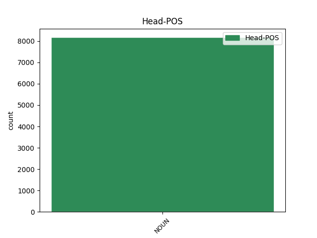

Distribution of features within this leaf

Agreement Rules sorted by frequency.
- When the dependent token is the modifer(mod) of the head token, and the head token is NOUN and the dependent token is ADJ.
1 Međutim _ _ _ _ 0 _ _ _
2 , _ _ _ _ 0 _ _ _
3 kao _ _ _ _ 0 _ _ _
4 što _ _ _ _ 0 _ _ _
5 lagano _ _ _ _ 0 _ _ _
6 , _ _ _ _ 0 _ _ _
7 ali _ _ _ _ 0 _ _ _
8 sigurno _ _ _ _ 0 _ _ _
9 napreduje _ _ _ _ 0 _ _ _
10 širenje _ _ _ _ 0 _ _ _
11 nuklearnih _ _ _ _ 0 _ _ _
12 centrala _ _ _ _ 0 _ _ _
13 po _ _ _ _ 0 _ _ _
14 svetu _ _ _ _ 0 _ _ _
15 usred _ _ _ _ 0 _ _ _
16 ekonomske _ _ _ _ 0 _ _ _
17 isplativosti _ _ _ _ 0 _ _ _
18 dogod _ _ _ _ 0 _ _ _
19 nema _ _ _ _ 0 _ _ _
20 akcidenata _ _ _ _ 0 _ _ _
21 , _ _ _ _ 0 _ _ _
22 tako _ _ _ _ 0 _ _ _
23 će _ _ _ _ 0 _ _ _
24 barem _ _ _ _ 0 _ _ _
25 zasad _ _ _ _ 0 _ _ _
26 i _ _ _ _ 0 _ _ _
27 Internet _ _ _ _ 0 _ _ _
28 stvari _ _ _ _ 0 _ _ _
29 nastaviti _ _ _ _ 0 _ _ _
30 da _ _ _ _ 0 _ _ _
31 postaje _ _ _ _ 0 _ _ _
32 realnost _ _ _ _ 0 _ _ _
33 , _ _ _ _ 0 _ _ _
34 dobrim _ _ _ _ 0 _ _ _
35 delom _ _ _ _ 0 _ _ _
36 i _ _ _ _ 0 _ _ _
37 zato _ _ _ _ 0 _ _ _
38 što _ _ _ _ 0 _ _ _
39 su _ _ _ _ 0 _ _ _
40 mlađe _ _ _ _ 0 _ _ _
41 generacije _ _ _ _ 0 _ _ _
42 već _ _ _ _ 0 _ _ _
43 od _ _ _ _ 0 _ _ _
44 malena _ _ _ _ 0 _ _ _
45 okružene _ _ _ _ 0 _ _ _
46 takvim _ _ _ _ 0 _ _ _
47 tehnološkim tehnološki ADJ Agpmsiy Case=Ins|Definite=Def|Degree=Pos|Gender=Masc|Number=Sing 48 mod _ _
48 konceptom koncept NOUN Ncmsi Case=Ins|Gender=Masc|Number=Sing 0 _ _ _
49 , _ _ _ _ 0 _ _ _
50 pa _ _ _ _ 0 _ _ _
51 i _ _ _ _ 0 _ _ _
52 delimično _ _ _ _ 0 _ _ _
53 integrisane _ _ _ _ 0 _ _ _
54 u _ _ _ _ 0 _ _ _
55 njega _ _ _ _ 0 _ _ _
56 . _ _ _ _ 0 _ _ _
1 Međutim _ _ _ _ 0 _ _ _
2 , _ _ _ _ 0 _ _ _
3 kao _ _ _ _ 0 _ _ _
4 što _ _ _ _ 0 _ _ _
5 lagano _ _ _ _ 0 _ _ _
6 , _ _ _ _ 0 _ _ _
7 ali _ _ _ _ 0 _ _ _
8 sigurno _ _ _ _ 0 _ _ _
9 napreduje _ _ _ _ 0 _ _ _
10 širenje _ _ _ _ 0 _ _ _
11 nuklearnih _ _ _ _ 0 _ _ _
12 centrala _ _ _ _ 0 _ _ _
13 po _ _ _ _ 0 _ _ _
14 svetu _ _ _ _ 0 _ _ _
15 usred _ _ _ _ 0 _ _ _
16 ekonomske _ _ _ _ 0 _ _ _
17 isplativosti _ _ _ _ 0 _ _ _
18 dogod _ _ _ _ 0 _ _ _
19 nema _ _ _ _ 0 _ _ _
20 akcidenata _ _ _ _ 0 _ _ _
21 , _ _ _ _ 0 _ _ _
22 tako _ _ _ _ 0 _ _ _
23 će _ _ _ _ 0 _ _ _
24 barem _ _ _ _ 0 _ _ _
25 zasad _ _ _ _ 0 _ _ _
26 i _ _ _ _ 0 _ _ _
27 Internet _ _ _ _ 0 _ _ _
28 stvari _ _ _ _ 0 _ _ _
29 nastaviti _ _ _ _ 0 _ _ _
30 da _ _ _ _ 0 _ _ _
31 postaje _ _ _ _ 0 _ _ _
32 realnost _ _ _ _ 0 _ _ _
33 , _ _ _ _ 0 _ _ _
34 dobrim _ _ _ _ 0 _ _ _
35 delom _ _ _ _ 0 _ _ _
36 i _ _ _ _ 0 _ _ _
37 zato _ _ _ _ 0 _ _ _
38 što _ _ _ _ 0 _ _ _
39 su _ _ _ _ 0 _ _ _
40 mlađe _ _ _ _ 0 _ _ _
41 generacije _ _ _ _ 0 _ _ _
42 već _ _ _ _ 0 _ _ _
43 od _ _ _ _ 0 _ _ _
44 malena _ _ _ _ 0 _ _ _
45 okružene _ _ _ _ 0 _ _ _
46 takvim takav DET Pd-msi Case=Ins|Gender=Masc|Number=Sing|PronType=Dem 48 det _ _
47 tehnološkim _ _ _ _ 0 _ _ _
48 konceptom koncept NOUN Ncmsi Case=Ins|Gender=Masc|Number=Sing 0 _ _ _
49 , _ _ _ _ 0 _ _ _
50 pa _ _ _ _ 0 _ _ _
51 i _ _ _ _ 0 _ _ _
52 delimično _ _ _ _ 0 _ _ _
53 integrisane _ _ _ _ 0 _ _ _
54 u _ _ _ _ 0 _ _ _
55 njega _ _ _ _ 0 _ _ _
56 . _ _ _ _ 0 _ _ _
1 Naime _ _ _ _ 0 _ _ _
2 , _ _ _ _ 0 _ _ _
3 2016. _ _ _ _ 0 _ _ _
4 jedan jedan NUM Mlcmsn Case=Nom|Gender=Masc|Number=Sing|NumType=Card 6 mod _ _
5 pametni _ _ _ _ 0 _ _ _
6 automobil automobil NOUN Ncmsn Case=Nom|Gender=Masc|Number=Sing 0 _ _ _
7 američkog _ _ _ _ 0 _ _ _
8 proizvođača _ _ _ _ 0 _ _ _
9 Tesla _ _ _ _ 0 _ _ _
10 Motors _ _ _ _ 0 _ _ _
11 nije _ _ _ _ 0 _ _ _
12 uspeo _ _ _ _ 0 _ _ _
13 da _ _ _ _ 0 _ _ _
14 uoči _ _ _ _ 0 _ _ _
15 razliku _ _ _ _ 0 _ _ _
16 između _ _ _ _ 0 _ _ _
17 bele _ _ _ _ 0 _ _ _
18 površine _ _ _ _ 0 _ _ _
19 prikolice _ _ _ _ 0 _ _ _
20 i _ _ _ _ 0 _ _ _
21 neba _ _ _ _ 0 _ _ _
22 i _ _ _ _ 0 _ _ _
23 došlo _ _ _ _ 0 _ _ _
24 je _ _ _ _ 0 _ _ _
25 do _ _ _ _ 0 _ _ _
26 sudara _ _ _ _ 0 _ _ _
27 sa _ _ _ _ 0 _ _ _
28 smrtnim _ _ _ _ 0 _ _ _
29 ishodom _ _ _ _ 0 _ _ _
30 . _ _ _ _ 0 _ _ _
1 Jedna jedan NUM Mlcfsn Case=Nom|Gender=Fem|Number=Sing|NumType=Card 4 mod@gov _ _
2 od _ _ _ _ 0 _ _ _
3 omiljenih _ _ _ _ 0 _ _ _
4 tema tema NOUN Ncfpg Case=Gen|Gender=Fem|Number=Plur 0 _ _ _
5 na _ _ _ _ 0 _ _ _
6 ovim _ _ _ _ 0 _ _ _
7 skupovima _ _ _ _ 0 _ _ _
8 je _ _ _ _ 0 _ _ _
9 i _ _ _ _ 0 _ _ _
10 ranjivost _ _ _ _ 0 _ _ _
11 pametnih _ _ _ _ 0 _ _ _
12 vozila _ _ _ _ 0 _ _ _
13 . _ _ _ _ 0 _ _ _
1 Kada _ _ _ _ 0 _ _ _
2 zatvorimo _ _ _ _ 0 _ _ _
3 oči _ _ _ _ 0 _ _ _
4 i _ _ _ _ 0 _ _ _
5 postanemo _ _ _ _ 0 _ _ _
6 pospani _ _ _ _ 0 _ _ _
7 ulazimo _ _ _ _ 0 _ _ _
8 u _ _ _ _ 0 _ _ _
9 alfa alfa DET Pd-fsa Case=Acc|Gender=Fem|Number=Sing|PronType=Dem 10 mod _ _
10 fazu faza NOUN Ncfsa Case=Acc|Gender=Fem|Number=Sing 0 _ _ _
11 . _ _ _ _ 0 _ _ _
1 Vratio _ _ _ _ 0 _ _ _
2 se _ _ _ _ 0 _ _ _
3 makartizam _ _ _ _ 0 _ _ _
4 , _ _ _ _ 0 _ _ _
5 samo _ _ _ _ 0 _ _ _
6 su _ _ _ _ 0 _ _ _
7 progonitelji _ _ _ _ 0 _ _ _
8 sada _ _ _ _ 0 _ _ _
9 iz _ _ _ _ 0 _ _ _
10 liberalne _ _ _ _ 0 _ _ _
11 elite _ _ _ _ 0 _ _ _
12 i _ _ _ _ 0 _ _ _
13 oni _ _ _ _ 0 _ _ _
14 kontrolišu _ _ _ _ 0 _ _ _
15 frakciju frakcija NOUN Ncfsa Case=Acc|Gender=Fem|Number=Sing 0 _ _ _
16 u _ _ _ _ 0 _ _ _
17 državi _ _ _ _ 0 _ _ _
18 koja _ _ _ _ 0 _ _ _
19 se _ _ _ _ 0 _ _ _
20 otela oteti VERB Vmp-sf Gender=Fem|Number=Sing|Tense=Past|VerbForm=Part|Voice=Act 15 mod _ _
21 od _ _ _ _ 0 _ _ _
22 države _ _ _ _ 0 _ _ _
23 i _ _ _ _ 0 _ _ _
24 bori _ _ _ _ 0 _ _ _
25 se _ _ _ _ 0 _ _ _
26 protiv _ _ _ _ 0 _ _ _
27 izabrane _ _ _ _ 0 _ _ _
28 vlasti _ _ _ _ 0 _ _ _
29 . _ _ _ _ 0 _ _ _
1 Sindikat _ _ _ _ 0 _ _ _
2 poslodavaca _ _ _ _ 0 _ _ _
3 Republike republika NOUN Ncfsg Case=Gen|Gender=Fem|Number=Sing 0 _ _ _
4 Srpske srpski ADJ Agpfsgy Case=Gen|Definite=Def|Degree=Pos|Gender=Fem|Number=Sing 3 flat _ _
5 ( _ _ _ _ 0 _ _ _
6 RS _ _ _ _ 0 _ _ _
7 ) _ _ _ _ 0 _ _ _
8 vodio _ _ _ _ 0 _ _ _
9 je _ _ _ _ 0 _ _ _
10 kampanju _ _ _ _ 0 _ _ _
11 za _ _ _ _ 0 _ _ _
12 uvođenje _ _ _ _ 0 _ _ _
13 dve _ _ _ _ 0 _ _ _
14 stope _ _ _ _ 0 _ _ _
15 PDV-a _ _ _ _ 0 _ _ _
16 , _ _ _ _ 0 _ _ _
17 u _ _ _ _ 0 _ _ _
18 skladu _ _ _ _ 0 _ _ _
19 sa _ _ _ _ 0 _ _ _
20 praksom _ _ _ _ 0 _ _ _
21 koja _ _ _ _ 0 _ _ _
22 postoji _ _ _ _ 0 _ _ _
23 u _ _ _ _ 0 _ _ _
24 mnogim _ _ _ _ 0 _ _ _
25 evropskim _ _ _ _ 0 _ _ _
26 zemljama _ _ _ _ 0 _ _ _
27 . _ _ _ _ 0 _ _ _
1 Govoreći _ _ _ _ 0 _ _ _
2 posle _ _ _ _ 0 _ _ _
3 sastanka _ _ _ _ 0 _ _ _
4 ministara _ _ _ _ 0 _ _ _
5 finansija _ _ _ _ 0 _ _ _
6 u _ _ _ _ 0 _ _ _
7 Briselu _ _ _ _ 0 _ _ _
8 u _ _ _ _ 0 _ _ _
9 ponedeljak _ _ _ _ 0 _ _ _
10 , _ _ _ _ 0 _ _ _
11 luksemburški _ _ _ _ 0 _ _ _
12 premijer premijer NOUN Ncmsn Case=Nom|Gender=Masc|Number=Sing 0 _ _ _
13 Žan-Klod _ _ _ _ 0 _ _ _
14 Junker _ _ _ _ 0 _ _ _
15 , _ _ _ _ 0 _ _ _
16 predsedavajući predsedavajući ADJ Agpmsny Case=Nom|Definite=Def|Degree=Pos|Gender=Masc|Number=Sing 12 appos _ _
17 evrozone _ _ _ _ 0 _ _ _
18 , _ _ _ _ 0 _ _ _
19 izjavio _ _ _ _ 0 _ _ _
20 je _ _ _ _ 0 _ _ _
21 novinarima _ _ _ _ 0 _ _ _
22 da _ _ _ _ 0 _ _ _
23 će _ _ _ _ 0 _ _ _
24 celokupna _ _ _ _ 0 _ _ _
25 suma _ _ _ _ 0 _ _ _
26 dogovorena _ _ _ _ 0 _ _ _
27 tokom _ _ _ _ 0 _ _ _
28 razgovora _ _ _ _ 0 _ _ _
29 biti _ _ _ _ 0 _ _ _
30 na _ _ _ _ 0 _ _ _
31 raspolaganju _ _ _ _ 0 _ _ _
32 za _ _ _ _ 0 _ _ _
33 pozajmljivanje _ _ _ _ 0 _ _ _
34 zemljama _ _ _ _ 0 _ _ _
35 članicama _ _ _ _ 0 _ _ _
36 koje _ _ _ _ 0 _ _ _
37 su _ _ _ _ 0 _ _ _
38 u _ _ _ _ 0 _ _ _
39 problemima _ _ _ _ 0 _ _ _
40 . _ _ _ _ 0 _ _ _
1 Ovogodišnji _ _ _ _ 0 _ _ _
2 muzički _ _ _ _ 0 _ _ _
3 festival festival NOUN Ncmsn Case=Nom|Gender=Masc|Number=Sing 0 _ _ _
4 EXIT _ _ _ _ 0 _ _ _
5 , _ _ _ _ 0 _ _ _
6 najveći velik ADJ Agsmsny Case=Nom|Definite=Def|Degree=Sup|Gender=Masc|Number=Sing 3 parataxis _ _
7 na _ _ _ _ 0 _ _ _
8 Balkanu _ _ _ _ 0 _ _ _
9 , _ _ _ _ 0 _ _ _
10 ugostio _ _ _ _ 0 _ _ _
11 je _ _ _ _ 0 _ _ _
12 više _ _ _ _ 0 _ _ _
13 od _ _ _ _ 0 _ _ _
14 150.000 _ _ _ _ 0 _ _ _
15 ljudi _ _ _ _ 0 _ _ _
16 i _ _ _ _ 0 _ _ _
17 stranih _ _ _ _ 0 _ _ _
18 muzičara _ _ _ _ 0 _ _ _
19 , _ _ _ _ 0 _ _ _
20 uključujući _ _ _ _ 0 _ _ _
21 Vajt _ _ _ _ 0 _ _ _
22 Strajps _ _ _ _ 0 _ _ _
23 ( _ _ _ _ 0 _ _ _
24 White _ _ _ _ 0 _ _ _
25 Stripes _ _ _ _ 0 _ _ _
26 ) _ _ _ _ 0 _ _ _
27 , _ _ _ _ 0 _ _ _
28 Garbidž _ _ _ _ 0 _ _ _
29 ( _ _ _ _ 0 _ _ _
30 Garbage _ _ _ _ 0 _ _ _
31 ) _ _ _ _ 0 _ _ _
32 , _ _ _ _ 0 _ _ _
33 Ijana _ _ _ _ 0 _ _ _
34 Brauna _ _ _ _ 0 _ _ _
35 ( _ _ _ _ 0 _ _ _
36 Ian _ _ _ _ 0 _ _ _
37 Brown _ _ _ _ 0 _ _ _
38 ) _ _ _ _ 0 _ _ _
39 i _ _ _ _ 0 _ _ _
40 Andervorld _ _ _ _ 0 _ _ _
41 ( _ _ _ _ 0 _ _ _
42 Underworld _ _ _ _ 0 _ _ _
43 ) _ _ _ _ 0 _ _ _
44 . _ _ _ _ 0 _ _ _
1 Kao _ _ _ _ 0 _ _ _
2 što _ _ _ _ 0 _ _ _
3 su _ _ _ _ 0 _ _ _
4 i _ _ _ _ 0 _ _ _
5 dablinske _ _ _ _ 0 _ _ _
6 ulice _ _ _ _ 0 _ _ _
7 kojima _ _ _ _ 0 _ _ _
8 sam _ _ _ _ 0 _ _ _
9 prošao _ _ _ _ 0 _ _ _
10 jedne _ _ _ _ 0 _ _ _
11 oktobarske _ _ _ _ 0 _ _ _
12 večeri _ _ _ _ 0 _ _ _
13 , _ _ _ _ 0 _ _ _
14 čitav _ _ _ _ 0 _ _ _
15 vek _ _ _ _ 0 _ _ _
16 nakon _ _ _ _ 0 _ _ _
17 „ „ ADJ Agpfsgy Case=Gen|Definite=Def|Degree=Pos|Gender=Fem|Number=Sing 18 punct _ SpaceAfter=No
18 odiseje odiseja NOUN Ncfsg Case=Gen|Gender=Fem|Number=Sing 0 _ _ _
19 ” _ _ _ _ 0 _ _ _
20 Leopolda _ _ _ _ 0 _ _ _
21 Bluma _ _ _ _ 0 _ _ _
22 , _ _ _ _ 0 _ _ _
23 predstavljale _ _ _ _ 0 _ _ _
24 samo _ _ _ _ 0 _ _ _
25 bledu _ _ _ _ 0 _ _ _
26 kopiju _ _ _ _ 0 _ _ _
27 Džojsovog _ _ _ _ 0 _ _ _
28 grada _ _ _ _ 0 _ _ _
29 . _ _ _ _ 0 _ _ _
1 Ljudi _ _ _ _ 0 _ _ _
2 bi _ _ _ _ 0 _ _ _
3 trebalo _ _ _ _ 0 _ _ _
4 da _ _ _ _ 0 _ _ _
5 shvate _ _ _ _ 0 _ _ _
6 da _ _ _ _ 0 _ _ _
7 je _ _ _ _ 0 _ _ _
8 EU _ _ _ _ 0 _ _ _
9 prostor _ _ _ _ 0 _ _ _
10 vrednosti _ _ _ _ 0 _ _ _
11 i _ _ _ _ 0 _ _ _
12 blagostanja _ _ _ _ 0 _ _ _
13 i _ _ _ _ 0 _ _ _
14 oni _ _ _ _ 0 _ _ _
15 zaslužuju _ _ _ _ 0 _ _ _
16 da _ _ _ _ 0 _ _ _
17 budu _ _ _ _ 0 _ _ _
18 deo deo NOUN Ncmsn Case=Nom|Gender=Masc|Number=Sing 0 _ _ _
19 njega on PRON Pp3msg Case=Gen|Gender=Masc|Number=Sing|Person=3|PronType=Prs 18 mod _ _
20 -- _ _ _ _ 0 _ _ _
21 ali _ _ _ _ 0 _ _ _
22 i _ _ _ _ 0 _ _ _
23 mi _ _ _ _ 0 _ _ _
24 moramo _ _ _ _ 0 _ _ _
25 da _ _ _ _ 0 _ _ _
26 uložimo _ _ _ _ 0 _ _ _
27 određene _ _ _ _ 0 _ _ _
28 napore _ _ _ _ 0 _ _ _
29 " _ _ _ _ 0 _ _ _
30 , _ _ _ _ 0 _ _ _
31 rekao _ _ _ _ 0 _ _ _
32 je _ _ _ _ 0 _ _ _
33 Timofti _ _ _ _ 0 _ _ _
34 tokom _ _ _ _ 0 _ _ _
35 izbora _ _ _ _ 0 _ _ _
36 . _ _ _ _ 0 _ _ _
1 Očigledno _ _ _ _ 0 _ _ _
2 smo _ _ _ _ 0 _ _ _
3 lagali _ _ _ _ 0 _ _ _
4 proteklih _ _ _ _ 0 _ _ _
5 godinu godina NOUN Ncfsa Case=Acc|Gender=Fem|Number=Sing 0 _ _ _
6 i _ _ _ _ 0 _ _ _
7 po _ _ _ _ 0 _ _ _
8 do _ _ _ _ 0 _ _ _
9 dve dva NUM Mlcf-n Case=Nom|Gender=Fem|Number=Plur|NumType=Card 5 flat _ SpaceAfter=No
10 . _ _ _ _ 0 _ _ _
1 Pop-Lazić _ _ _ _ 0 _ _ _
2 je _ _ _ _ 0 _ _ _
3 rekla _ _ _ _ 0 _ _ _
4 da _ _ _ _ 0 _ _ _
5 je _ _ _ _ 0 _ _ _
6 njen _ _ _ _ 0 _ _ _
7 čin _ _ _ _ 0 _ _ _
8 izraz _ _ _ _ 0 _ _ _
9 protivljenja protivljenje NOUN Ncnsg Case=Gen|Gender=Neut|Number=Sing 0 _ _ _
10 onome onaj DET Pd-nsd Case=Dat|Gender=Neut|Number=Sing|PronType=Dem 9 udep _ _
11 što _ _ _ _ 0 _ _ _
12 je _ _ _ _ 0 _ _ _
13 opisala _ _ _ _ 0 _ _ _
14 kao _ _ _ _ 0 _ _ _
15 tiraniju _ _ _ _ 0 _ _ _
16 nad _ _ _ _ 0 _ _ _
17 opozicionom _ _ _ _ 0 _ _ _
18 strankama _ _ _ _ 0 _ _ _
19 u _ _ _ _ 0 _ _ _
20 parlamentu _ _ _ _ 0 _ _ _
21 . _ _ _ _ 0 _ _ _
1 Kritičari _ _ _ _ 0 _ _ _
2 tvrde _ _ _ _ 0 _ _ _
3 da _ _ _ _ 0 _ _ _
4 mu on PRON Pp3msd Case=Dat|Gender=Masc|Number=Sing|Person=3|PronType=Prs 6 det _ _
5 je _ _ _ _ 0 _ _ _
6 dizajn dizajn NOUN Ncmsn Case=Nom|Gender=Masc|Number=Sing 0 _ _ _
7 previše _ _ _ _ 0 _ _ _
8 savremen _ _ _ _ 0 _ _ _
9 u _ _ _ _ 0 _ _ _
10 odnosu _ _ _ _ 0 _ _ _
11 na _ _ _ _ 0 _ _ _
12 okruženje _ _ _ _ 0 _ _ _
13 . _ _ _ _ 0 _ _ _
1 " _ _ _ _ 0 _ _ _
2 Svesni _ _ _ _ 0 _ _ _
3 smo _ _ _ _ 0 _ _ _
4 napora _ _ _ _ 0 _ _ _
5 koje _ _ _ _ 0 _ _ _
6 je _ _ _ _ 0 _ _ _
7 turska _ _ _ _ 0 _ _ _
8 vlada _ _ _ _ 0 _ _ _
9 uložila _ _ _ _ 0 _ _ _
10 da _ _ _ _ 0 _ _ _
11 bi _ _ _ _ 0 _ _ _
12 ojačala _ _ _ _ 0 _ _ _
13 BiH _ _ _ _ 0 _ _ _
14 na _ _ _ _ 0 _ _ _
15 putu _ _ _ _ 0 _ _ _
16 evroatlantske _ _ _ _ 0 _ _ _
17 integracije _ _ _ _ 0 _ _ _
18 , _ _ _ _ 0 _ _ _
19 a _ _ _ _ 0 _ _ _
20 tu _ _ _ _ 0 _ _ _
21 smatramo _ _ _ _ 0 _ _ _
22 da _ _ _ _ 0 _ _ _
23 je _ _ _ _ 0 _ _ _
24 svaka _ _ _ _ 0 _ _ _
25 pomoć pomoć NOUN Ncfsn Case=Nom|Gender=Fem|Number=Sing 0 _ _ _
26 , _ _ _ _ 0 _ _ _
27 posebno _ _ _ _ 0 _ _ _
28 ta taj DET Pd-fsn Case=Nom|Gender=Fem|Number=Sing|PronType=Dem 25 parataxis _ _
29 koju _ _ _ _ 0 _ _ _
30 nude _ _ _ _ 0 _ _ _
31 prijateljske _ _ _ _ 0 _ _ _
32 zemlje _ _ _ _ 0 _ _ _
33 , _ _ _ _ 0 _ _ _
34 dobrodošla _ _ _ _ 0 _ _ _
35 " _ _ _ _ 0 _ _ _
36 , _ _ _ _ 0 _ _ _
37 navodi _ _ _ _ 0 _ _ _
38 se _ _ _ _ 0 _ _ _
39 u _ _ _ _ 0 _ _ _
40 saopštenju _ _ _ _ 0 _ _ _
41 . _ _ _ _ 0 _ _ _
1 " _ _ _ _ 0 _ _ _
2 Permanentna _ _ _ _ 0 _ _ _
3 pravila pravilo NOUN Ncnpn Case=Nom|Gender=Neut|Number=Plur 0 _ _ _
4 , _ _ _ _ 0 _ _ _
5 zvala zvati VERB Vmp-pn Gender=Neut|Number=Plur|Tense=Past|VerbForm=Part|Voice=Act 3 parataxis _ _
6 se _ _ _ _ 0 _ _ _
7 ona _ _ _ _ 0 _ _ _
8 ustav _ _ _ _ 0 _ _ _
9 ili _ _ _ _ 0 _ _ _
10 osnovni _ _ _ _ 0 _ _ _
11 zakoni _ _ _ _ 0 _ _ _
12 , _ _ _ _ 0 _ _ _
13 moraju _ _ _ _ 0 _ _ _
14 biti _ _ _ _ 0 _ _ _
15 usvojena _ _ _ _ 0 _ _ _
16 i _ _ _ _ 0 _ _ _
17 moraju _ _ _ _ 0 _ _ _
18 trajati _ _ _ _ 0 _ _ _
19 . _ _ _ _ 0 _ _ _
1 " _ _ _ _ 0 _ _ _
2 Reforme _ _ _ _ 0 _ _ _
3 koje _ _ _ _ 0 _ _ _
4 su _ _ _ _ 0 _ _ _
5 potrebne _ _ _ _ 0 _ _ _
6 Srbiji _ _ _ _ 0 _ _ _
7 zahtevaju _ _ _ _ 0 _ _ _
8 vladu _ _ _ _ 0 _ _ _
9 sa _ _ _ _ 0 _ _ _
10 stabilnom _ _ _ _ 0 _ _ _
11 većinom _ _ _ _ 0 _ _ _
12 , _ _ _ _ 0 _ _ _
13 unutrašnju _ _ _ _ 0 _ _ _
14 harmoniju _ _ _ _ 0 _ _ _
15 i _ _ _ _ 0 _ _ _
16 jasnu _ _ _ _ 0 _ _ _
17 viziju _ _ _ _ 0 _ _ _
18 -- _ _ _ _ 0 _ _ _
19 ova _ _ _ _ 0 _ _ _
20 vlada _ _ _ _ 0 _ _ _
21 ne _ _ _ _ 0 _ _ _
22 ispunjava _ _ _ _ 0 _ _ _
23 nijedan nijedan DET Pi-msan Animacy=Inan|Case=Acc|Gender=Masc|Number=Sing|PronType=Int,Rel 26 orphan _ _
24 od _ _ _ _ 0 _ _ _
25 tih _ _ _ _ 0 _ _ _
26 preduslova preduslov NOUN Ncmpg Case=Gen|Gender=Masc|Number=Plur 0 _ _ _
27 " _ _ _ _ 0 _ _ _
28 , _ _ _ _ 0 _ _ _
29 kaže _ _ _ _ 0 _ _ _
30 analitičar _ _ _ _ 0 _ _ _
31 Dejan _ _ _ _ 0 _ _ _
32 Vuk _ _ _ _ 0 _ _ _
33 Stanković _ _ _ _ 0 _ _ _
34 za _ _ _ _ 0 _ _ _
35 SETimes _ _ _ _ 0 _ _ _
36 . _ _ _ _ 0 _ _ _
1 Dakle _ _ _ _ 0 _ _ _
2 , _ _ _ _ 0 _ _ _
3 sve _ _ _ _ 0 _ _ _
4 je _ _ _ _ 0 _ _ _
5 u _ _ _ _ 0 _ _ _
6 vrhunskom _ _ _ _ 0 _ _ _
7 intelektu _ _ _ _ 0 _ _ _
8 , _ _ _ _ 0 _ _ _
9 a _ _ _ _ 0 _ _ _
10 ništa ništa PRON Pi3n-n Case=Nom|Gender=Neut|PronType=Neg 12 orphan _ _
11 u _ _ _ _ 0 _ _ _
12 trčanju trčanje NOUN Ncnsl Case=Loc|Gender=Neut|Number=Sing 0 _ _ _
13 , _ _ _ _ 0 _ _ _
14 skakanju _ _ _ _ 0 _ _ _
15 , _ _ _ _ 0 _ _ _
16 tuči _ _ _ _ 0 _ _ _
17 , _ _ _ _ 0 _ _ _
18 ili _ _ _ _ 0 _ _ _
19 brzoj _ _ _ _ 0 _ _ _
20 vožnji _ _ _ _ 0 _ _ _
21 kolima _ _ _ _ 0 _ _ _
22 . _ _ _ _ 0 _ _ _
Disagree Examples:
1 Neki _ _ _ _ 0 _ _ _
2 tvrde _ _ _ _ 0 _ _ _
3 da _ _ _ _ 0 _ _ _
4 je _ _ _ _ 0 _ _ _
5 presuda _ _ _ _ 0 _ _ _
6 Veliji _ _ _ _ 0 _ _ _
7 Ramkovskom _ _ _ _ 0 _ _ _
8 napad _ _ _ _ 0 _ _ _
9 na _ _ _ _ 0 _ _ _
10 slobodu _ _ _ _ 0 _ _ _
11 medija _ _ _ _ 0 _ _ _
12 , _ _ _ _ 0 _ _ _
13 ali _ _ _ _ 0 _ _ _
14 drugi _ _ _ _ 0 _ _ _
15 tvrde _ _ _ _ 0 _ _ _
16 da _ _ _ _ 0 _ _ _
17 dokazi _ _ _ _ 0 _ _ _
18 o _ _ _ _ 0 _ _ _
19 njegovim njegov DET Ps3npl Case=Loc|Gender=Neut|Gender[psor]=Masc,Neut|Number=Plur|Number[psor]=Sing|Person=3|Poss=Yes|PronType=Prs 21 det _ _
20 krivičnim _ _ _ _ 0 _ _ _
21 delima deo NOUN Ncmpl Case=Loc|Gender=Masc|Number=Plur 0 _ _ _
22 govore _ _ _ _ 0 _ _ _
23 suprotno _ _ _ _ 0 _ _ _
24 . _ _ _ _ 0 _ _ _
1 Međutim _ _ _ _ 0 _ _ _
2 , _ _ _ _ 0 _ _ _
3 naravno _ _ _ _ 0 _ _ _
4 da _ _ _ _ 0 _ _ _
5 će _ _ _ _ 0 _ _ _
6 konačna _ _ _ _ 0 _ _ _
7 odluka _ _ _ _ 0 _ _ _
8 i _ _ _ _ 0 _ _ _
9 vreme _ _ _ _ 0 _ _ _
10 kada _ _ _ _ 0 _ _ _
11 će _ _ _ _ 0 _ _ _
12 ona _ _ _ _ 0 _ _ _
13 biti _ _ _ _ 0 _ _ _
14 doneta _ _ _ _ 0 _ _ _
15 prvenstveno _ _ _ _ 0 _ _ _
16 zavisiti _ _ _ _ 0 _ _ _
17 od _ _ _ _ 0 _ _ _
18 procene _ _ _ _ 0 _ _ _
19 zaštite _ _ _ _ 0 _ _ _
20 naših naš DET Ps1fpg Case=Gen|Gender=Fem|Number=Plur|Number[psor]=Plur|Person=1|Poss=Yes|PronType=Prs 24 det _ _
21 nacionalnih _ _ _ _ 0 _ _ _
22 i _ _ _ _ 0 _ _ _
23 državnih _ _ _ _ 0 _ _ _
24 interesa interes NOUN Ncmpg Case=Gen|Gender=Masc|Number=Plur 0 _ _ _
25 . _ _ _ _ 0 _ _ _
1 Formulacija _ _ _ _ 0 _ _ _
2 " _ _ _ _ 0 _ _ _
3 osim _ _ _ _ 0 _ _ _
4 ako _ _ _ _ 0 _ _ _
5 se _ _ _ _ 0 _ _ _
6 radi _ _ _ _ 0 _ _ _
7 o _ _ _ _ 0 _ _ _
8 osudi _ _ _ _ 0 _ _ _
9 za _ _ _ _ 0 _ _ _
10 krivična _ _ _ _ 0 _ _ _
11 dela delo NOUN Ncnpa Case=Acc|Gender=Neut|Number=Plur 0 _ _ _
12 počinjena počiniti ADJ Appfsny Case=Nom|Definite=Def|Degree=Pos|Gender=Fem|Number=Sing|VerbForm=Part|Voice=Pass 11 mod _ _
13 protiv _ _ _ _ 0 _ _ _
14 suvereniteta _ _ _ _ 0 _ _ _
15 zemlje _ _ _ _ 0 _ _ _
16 , _ _ _ _ 0 _ _ _
17 principa _ _ _ _ 0 _ _ _
18 republike _ _ _ _ 0 _ _ _
19 i _ _ _ _ 0 _ _ _
20 nacionalne _ _ _ _ 0 _ _ _
21 bezbednosti _ _ _ _ 0 _ _ _
22 " _ _ _ _ 0 _ _ _
23 isključena _ _ _ _ 0 _ _ _
24 je _ _ _ _ 0 _ _ _
25 iz _ _ _ _ 0 _ _ _
26 Člana _ _ _ _ 0 _ _ _
27 30. _ _ _ _ 0 _ _ _
1 Ovlašćenja ovlašćenje NOUN Ncnpn Case=Nom|Gender=Neut|Number=Plur 0 _ _ _
2 Revizorske _ _ _ _ 0 _ _ _
3 kancelarije _ _ _ _ 0 _ _ _
4 , _ _ _ _ 0 _ _ _
5 obrazložena obrazložiti ADJ Appfsny Case=Nom|Definite=Def|Degree=Pos|Gender=Fem|Number=Sing|VerbForm=Part|Voice=Pass 1 mod _ _
6 u _ _ _ _ 0 _ _ _
7 Članu _ _ _ _ 0 _ _ _
8 160 _ _ _ _ 0 _ _ _
9 , _ _ _ _ 0 _ _ _
10 su _ _ _ _ 0 _ _ _
11 proširena _ _ _ _ 0 _ _ _
12 i _ _ _ _ 0 _ _ _
13 izbačena _ _ _ _ 0 _ _ _
14 je _ _ _ _ 0 _ _ _
15 rečenica _ _ _ _ 0 _ _ _
16 kojom _ _ _ _ 0 _ _ _
17 se _ _ _ _ 0 _ _ _
18 poziva _ _ _ _ 0 _ _ _
19 na _ _ _ _ 0 _ _ _
20 tajne _ _ _ _ 0 _ _ _
21 istrage _ _ _ _ 0 _ _ _
22 vojnih _ _ _ _ 0 _ _ _
23 troškova _ _ _ _ 0 _ _ _
24 . _ _ _ _ 0 _ _ _
1 Hrvatska _ _ _ _ 0 _ _ _
2 mora _ _ _ _ 0 _ _ _
3 da _ _ _ _ 0 _ _ _
4 u _ _ _ _ 0 _ _ _
5 sledeća sledeći ADJ Agpnpay Case=Acc|Definite=Def|Degree=Pos|Gender=Neut|Number=Plur 7 mod _ _
6 tri _ _ _ _ 0 _ _ _
7 meseca mesec NOUN Ncmsg Case=Gen|Gender=Masc|Number=Sing 0 _ _ _
8 ubrza _ _ _ _ 0 _ _ _
9 reforme _ _ _ _ 0 _ _ _
10 koje _ _ _ _ 0 _ _ _
11 zahteva _ _ _ _ 0 _ _ _
12 EU _ _ _ _ 0 _ _ _
13 , _ _ _ _ 0 _ _ _
14 ako _ _ _ _ 0 _ _ _
15 želi _ _ _ _ 0 _ _ _
16 da _ _ _ _ 0 _ _ _
17 ostane _ _ _ _ 0 _ _ _
18 na _ _ _ _ 0 _ _ _
19 putu _ _ _ _ 0 _ _ _
20 za _ _ _ _ 0 _ _ _
21 ulazak _ _ _ _ 0 _ _ _
22 u _ _ _ _ 0 _ _ _
23 članstvo _ _ _ _ 0 _ _ _
24 , _ _ _ _ 0 _ _ _
25 kako _ _ _ _ 0 _ _ _
26 se _ _ _ _ 0 _ _ _
27 predviđa _ _ _ _ 0 _ _ _
28 , _ _ _ _ 0 _ _ _
29 2010. _ _ _ _ 0 _ _ _
30 godine _ _ _ _ 0 _ _ _
31 , _ _ _ _ 0 _ _ _
32 naglasio _ _ _ _ 0 _ _ _
33 je _ _ _ _ 0 _ _ _
34 komesar _ _ _ _ 0 _ _ _
35 EU _ _ _ _ 0 _ _ _
36 za _ _ _ _ 0 _ _ _
37 proširenje _ _ _ _ 0 _ _ _
38 Oli _ _ _ _ 0 _ _ _
39 Ren _ _ _ _ 0 _ _ _
40 u _ _ _ _ 0 _ _ _
41 utorak _ _ _ _ 0 _ _ _
42 . _ _ _ _ 0 _ _ _